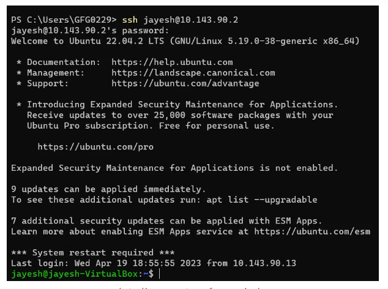

Overview
The ssh command is used to securely access and manage remote systems using the Secure Shell (SSH) protocol. It provides encrypted communication between two systems over an insecure network.
What Does SSH Command Do?
The ssh command is used to:
- Log in to remote systems securely.
- Execute commands on remote servers.
- Transfer files securely using SSH tunnels.
Common Use Cases
- Remote system administration.
- Securely run scripts or commands on remote servers.
- Set up encrypted tunnels for secure communication.
Example
# Connect to a remote server
ssh user@192.168.1.1
# Connect using a specific port
ssh -p 2222 user@192.168.1.1
# Connect using a private key
ssh -i ~/.ssh/id_rsa user@hostnameExample Output

The image above shows an example of the output from the 'ssh' command, displaying processes sorted by CPU usage.